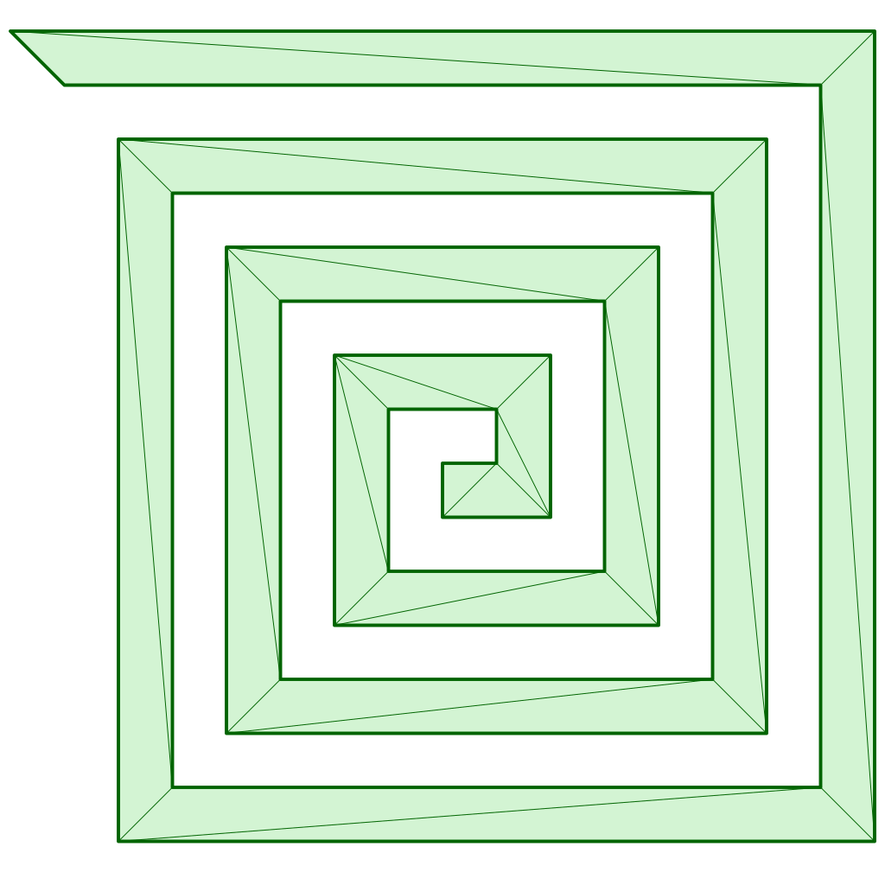
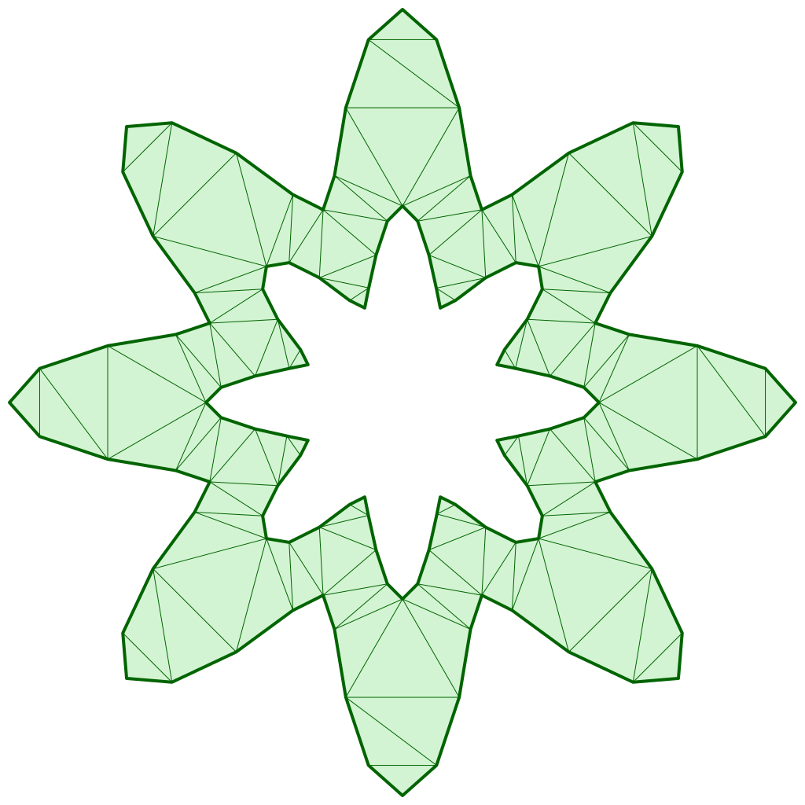

Performance Comparison
Benchmark project is here.
All tests were run on a machine with the following specifications:
3 GHz 6-Core Intel Core i5, 40GB 2667 MHz DDR4
All results are presented in seconds.
Solvers:
- iTriangle(Unchecked-Raw) v0.31.0 – only raw triangulation, no validation check
- iTriangle(Unchecked-Delaunay) v0.31.0 – raw triangulation and refinement Delaunay
- iTriangle(Raw) v0.31.0 – validation and raw triangulation
- iTriangle(Delaunay) v0.31.0 – validation, raw triangulation and refinement Delaunay
- earcutr(MapBox) v0.4.3 – Rust port– only raw triangulation, no validation check
- earcut(MapBox) v2.2.4 – C++ official– only raw triangulation, no validation check
- triangle v1.6 – C official– constraint Delaunay triangulation, no validation check
Simple Star Test
This test generates and triangulate 10,000 unique star-shaped polygons, one at a time. Each shape is defined by:
- A unique radius scale (100 variations)
- A unique rotation (100 steps across a full circle)
- A given number of corners (count), each with 10 points
All shapes are clean (non-intersecting), and no mesh is reused — each one is processed independently.
| Count | Un-Raw | Un-Delaunay | Raw | Delaunay | Earcutr(Rust) | Earcut(C++) | Triangle(C) |
|---|---|---|---|---|---|---|---|
| 4 | 0.042724 | 0.111433 | 0.079023 | 0.149286 | 0.057268 | 0.025066 | 0.460071 |
| 8 | 0.083704 | 0.217058 | 0.169321 | 0.303273 | 0.127877 | 0.0668991 | 0.884584 |
| 16 | 0.174608 | 0.403747 | 0.373843 | 0.616759 | 0.290149 | 0.219485 | 1.52763 |
| 32 | 0.363115 | 0.773319 | 0.832105 | 1.253739 | 0.693053 | 0.494215 | 3.07119 |
| 64 | 0.769955 | 1.490260 | 2.077839 | 2.849603 | 1.699206 | 1.2837 | 6.14373 |
| 128 | 1.688746 | 2.911652 | 5.533498 | 6.883017 | 4.253521 | 3.15526 | 11.7701 |
| 256 | 3.465031 | 5.761777 | 16.054511 | 18.574095 | 11.460828 | 8.58501 | 23.1163 |
| 512 | 7.063979 | 11.478699 | 45.202637 | 49.509120 | 40.623172 | 32.9052 | 45.0489 |
Star with Hole Test
This test generates and triangulates 10,000 unique star-shaped polygons with a central hole, one at a time. Each shape is defined by:
- A unique radius scale (100 variations)
- A unique rotation (100 steps across a full circle)
- A central hole generated as a smaller star
- A given number of corners (count), each with 10 points
All shapes are clean (non-intersecting), and no mesh is reused — each one is processed independently.

| Count | Un-Raw | Un-Delaunay | Raw | Delaunay | Earcutr(Rust) | Earcut(C++) | Triangle(C) |
|---|---|---|---|---|---|---|---|
| 4 | 0.094518 | 0.201821 | 0.250895 | 0.361006 | 0.187054 | 0.136161 | 0.801385 |
| 8 | 0.187340 | 0.380116 | 0.533652 | 0.743455 | 0.492114 | 0.454629 | 1.59074 |
| 16 | 0.388725 | 0.728224 | 1.200238 | 1.579734 | 1.537897 | 1.52663 | 3.12989 |
| 32 | 0.796857 | 1.477642 | 3.011562 | 3.662901 | 6.108676 | 5.16188 | 6.21763 |
| 64 | 1.686455 | 2.747037 | 7.879640 | 9.071579 | 29.415327 | 25.1207 | 12.29 |
| 128 | 3.601513 | 5.478580 | 22.386378 | 24.409134 | 201.363290 | 161.923 | 24.6715 |
| 256 | 7.615879 | 11.411398 | 63.665463 | 67.220430 | --- | --- | 50.5745 |
Rect with Star Holes Test
This test generates and triangulates 25 unique rectangles filled with many 5 corners star-shaped holes.
Each shape is defined by:
- A large outer rectangle
- A grid of count × count small stars as holes, each with:
- A varying radius scale (5 variations)
- A unique rotation (5 variations)
- 5 corners per star, with 10 points per corner.
All shapes are clean (non-intersecting), and no mesh is reused — each one is processed independently.

| Count | Un-Raw | Un-Delaunay | Raw | Delaunay | Earcutr(Rust) | Earcut(C++) | Triangle(C) |
|---|---|---|---|---|---|---|---|
| 4 | 0.002339 | 0.008275 | 0.009139 | 0.042705 | 0.037897 | 0.00531192 | 0.0281862 |
| 8 | 0.008906 | 0.024921 | 0.036900 | 0.104350 | 0.076405 | 0.0431032 | 0.094576 |
| 16 | 0.044372 | 0.116687 | 0.142827 | 0.323554 | 0.605979 | 0.571262 | 0.329305 |
| 32 | 0.186836 | 0.510489 | 0.460254 | 0.936904 | 7.496754 | 0.54836 | 1.34492 |
| 64 | 0.786142 | 2.617753 | 1.985195 | 4.231544 | 210.383871 | 201.28 | 5.86257 |
| 128 | 4.351395 | 18.809027 | 9.719830 | 24.878510 | --- | --- | 28.4693 |
| 256 | 18.935817 | 149.748440 | 37.087321 | 179.928663 | --- | --- | 175.662 |